السلسلة 74
السيارة (صنف B) · 40 سؤال بالصوت. حاول تجاوب بوحدك، من بعد شوف الجواب.
السؤال 1
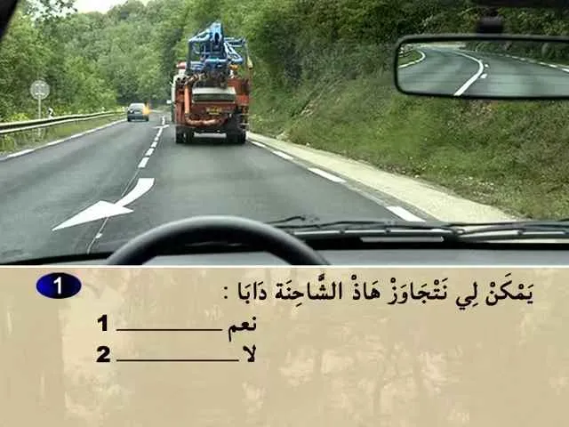
بيّن الجواب
الجواب الصحيح: 2
ملي كنكونو في طريق بجوج اتجاهات بحال طريق وطنية، ما يمكنش نتبعو طوموبيل كدير تجاوز لطوموبيل أخرى. فهاذ الحالة، ما يمكنش نتجاوز.
السؤال 2
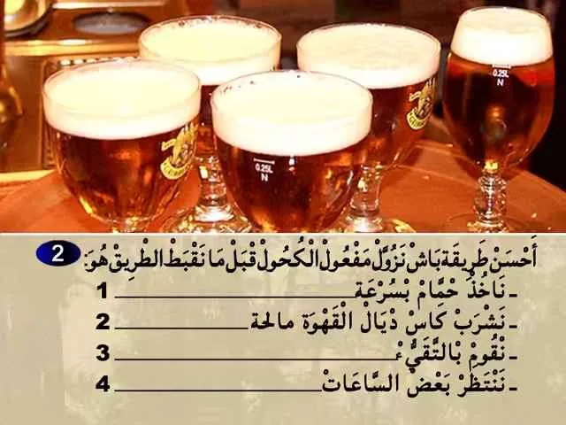
بيّن الجواب
الجواب الصحيح: 4
خاص نصبر باش يزول مفعول الشراب قبل ما نسوق.
السؤال 3
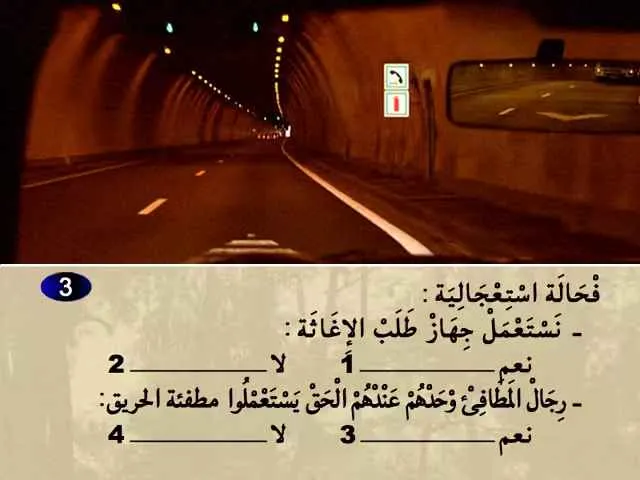
بيّن الجواب
الجواب الصحيح: 1 و 4
إلى وقع شي عطب مفاجئ ولا كنت في حالة استعجالية، نقدر نستعمل جهاز طلب الإغاثة، وحتى مطفأة الحريق يمكن لأي واحد يستعملها فحالات الاستعجال وماشي غير رجال المطافئ.
السؤال 4
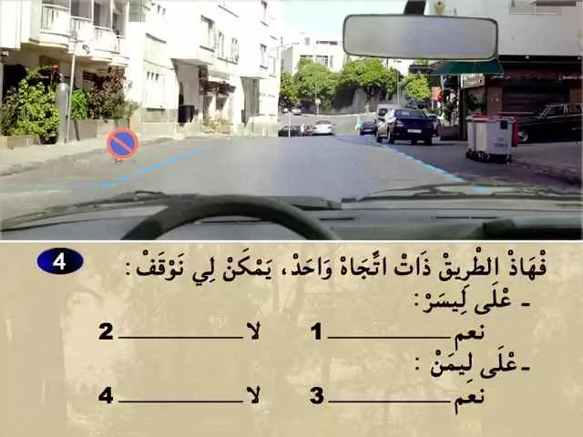
بيّن الجواب
الجواب الصحيح: 1 و 3
فطريق باتجاه واحد يمكن لينا نوقفو ونحبسو فالجهة اليمنى أو اليسرى، فهاذ الحالة التوقف ممنوع حيت العلامة كتشير للمنع، ولكن الوقوف ممكن حيث ما كايناش علامة كتمنع الوقوف فاليمين أو فاليسار.
السؤال 5
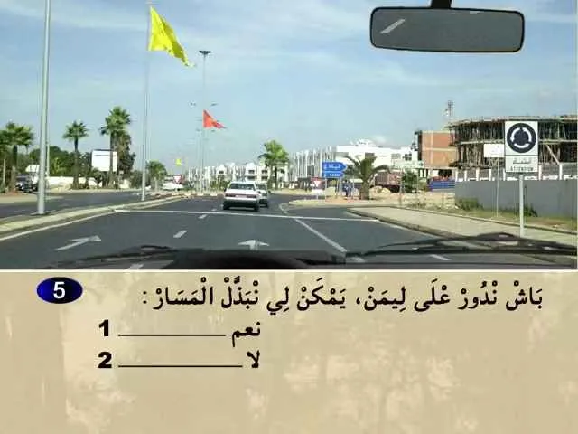
بيّن الجواب
الجواب الصحيح: 2
ما نقدرش نبدل المسلك حيث كاين خط متّصل اللي ما خاصنيش نتخطاه.
السؤال 6
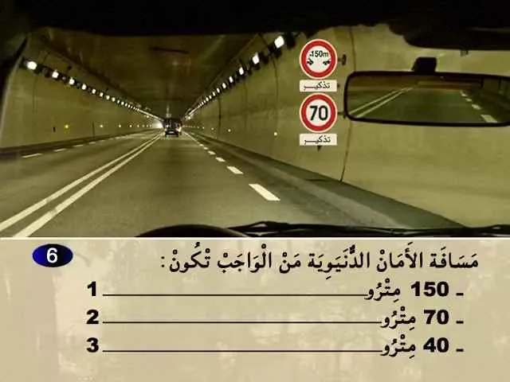
بيّن الجواب
الجواب الصحيح: 1
تحديد السرعة هو 70 كلم ف الساعة كيفما كتشير العلامة، والمسافة اللي خاصني نحتافظ بيها هي على الأقل 150 متر بيني وبين الطوموبيل اللي قدامي كيفما كتشير العلامة الثانية.
السؤال 7
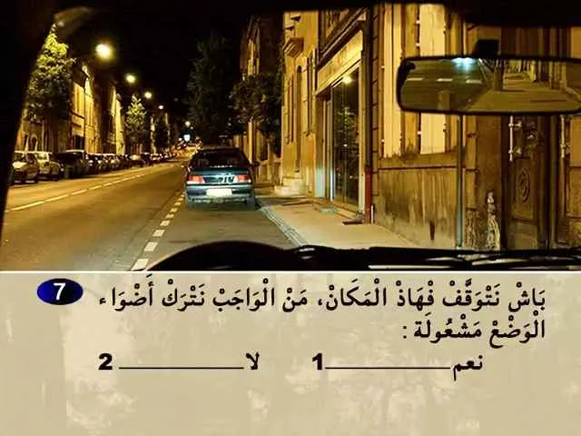
بيّن الجواب
الجواب الصحيح: 2
فهاذ البلاصة باش نحبس ما خاصنيش نخلي الاضواء شاعلين، حيث كاين الإنارة ديال الشارع.
السؤال 8
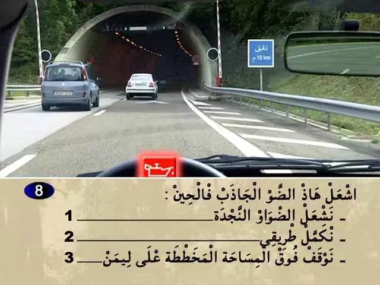
بيّن الجواب
الجواب الصحيح: 1 و 3
الضو الأحمر الجاذب الوحيد اللي ما كنوقفش الى شعل هو ضوّ البطارية، يمكن نكمل ونتأكد منها حتى نوصل، ولكن باقي الأضواء ملي يشعلو بالأحمر خاصني نشعل ضوّ النجدة ونوقف فالجهة اليمنى.
السؤال 9
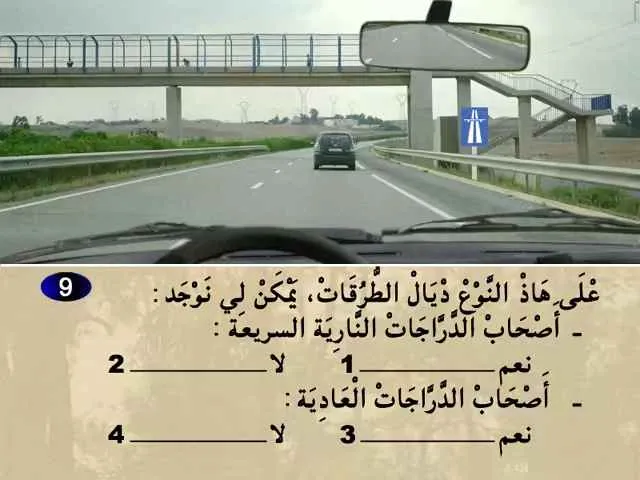
بيّن الجواب
الجواب الصحيح: 1 و 4
فالطريق السيار، نقدر نلقى الدراجات النارية السريعة (لي كيخصها رخصة سياقة)، ولكن ما نلقاش أصحاب الدراجات العادية حيت ممنوع عليهم السياقة فالطريق السيار.
السؤال 10
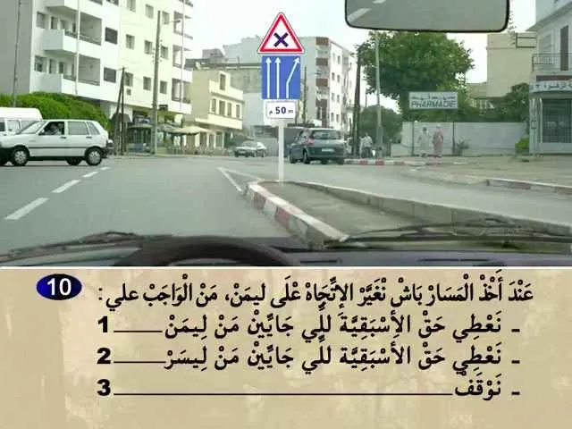
بيّن الجواب
الجواب الصحيح: 1
العلامة كتشير لملتقى الطرق، باش نبدل الاتجاه لليمين في ملتقيات الطرق دائما نعطي حق الأسبقية للطوموبيلات اللي جاية من اليمين.
السؤال 11
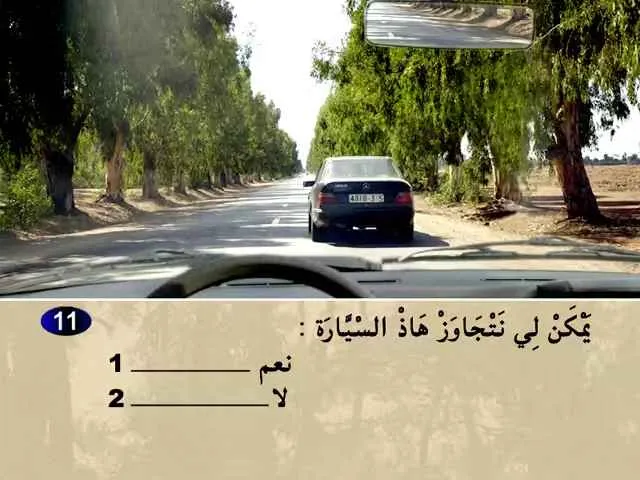
بيّن الجواب
الجواب الصحيح: 1
ما كايناش طوموبيل كتوجد للتجاوز من ورايا وما كايناش طوموبيل جاية من الاتجاه المعاكس، الخط المتقطع كيسمح ليا بالتجاوز، إذن يمكنني نتجاوز.
السؤال 12
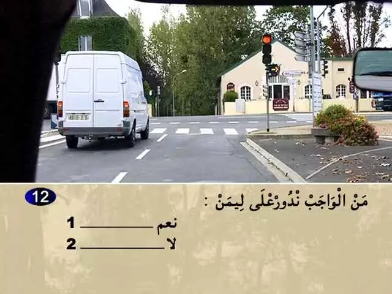
بيّن الجواب
الجواب الصحيح: 2
السهم الأخضر فالضوّ يعني يمكن ندور لليمين ولكن ماكيجبرنيش.
السؤال 13
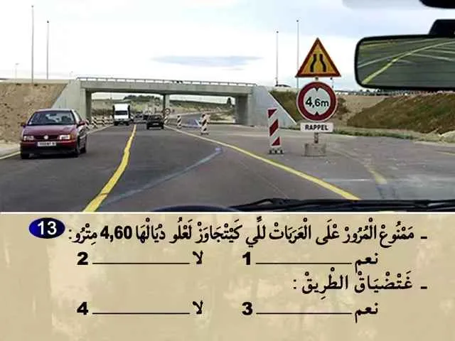
بيّن الجواب
الجواب الصحيح: 1 و 3
الإشارة الخاصة بالمنع كتعني أن الطوموبيلات اللي كيتجاوز طولها الرقم المشار اليه فالعلامة ممنوعة من المرور، والإشارة الصفراء المؤقتة كتقول أن الطريق غادي تضيق من الجهتين.
السؤال 14
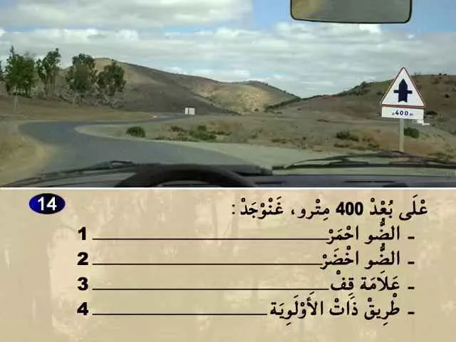
بيّن الجواب
الجواب الصحيح: 4
الإشارة الطُرقيّة كتقول أن بعد 400 متر غادي نلقى طريق ذات أولوية.
السؤال 15
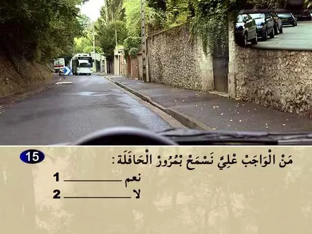
بيّن الجواب
الجواب الصحيح: 1
الحافلة بدلات الاتجاه نحو اليسار شوية باش تقدر تمر بسبب الأشغال، وأنا بعيد، إذن خاصني نخليها تمر باش ما نعرقلوش حركة السير.
السؤال 16
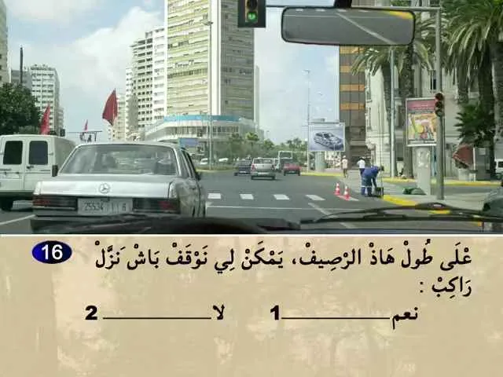
بيّن الجواب
الجواب الصحيح: 2
الرصيف مصبوغ باللون الأصفر، فهاد الحالة ما يمكنش نوقف ولا نتوقف.
السؤال 17
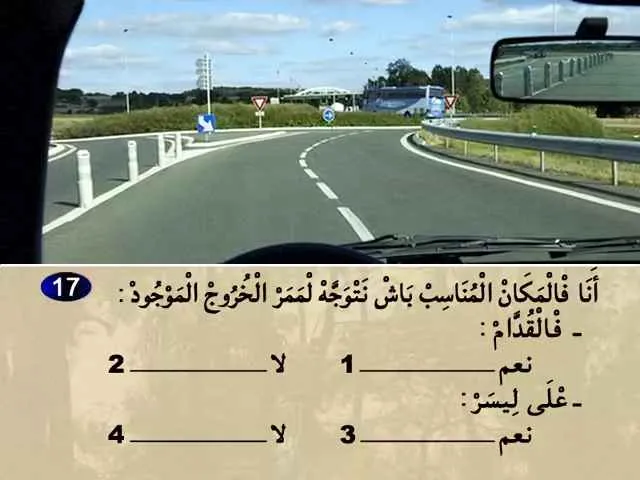
بيّن الجواب
الجواب الصحيح: 2 و 3
فالرومبوان إلى كنت فالجهة اليسرى (يعني مني للرومبوان)، فهذا يعني غادي ندور لليسار من بعد الرومبوان. باش نتجه للأمام خاصني نكون فالمسلك اليمين، إذن أنا فالمكان المناسب باش نخرج من الرومبوان فاليسار ولكن ماشي باش نكمل للأمام.
السؤال 18
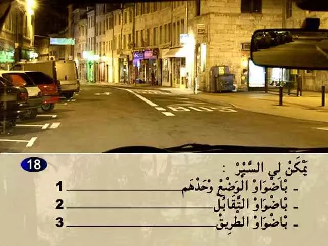
بيّن الجواب
الجواب الصحيح: 2
فالفترة الليلية وداخل المدينة، مع وجود إنارة الشارع يمكنني نستعمل أضواء الوضع أو أضواء التقابل. أضواء الطريق ما تستعملش داخل المدينة إلاّ للتنبيه.
السؤال 19
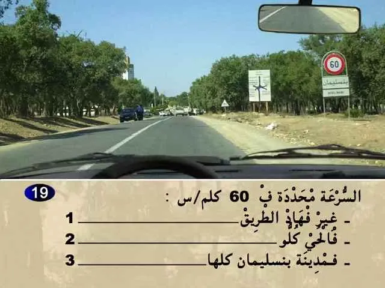
بيّن الجواب
الجواب الصحيح: 3
الإشارة الطُرقيّة تعني تحديد السرعة في 60 كلم ف الساعة فمدينة بنسليمان كاملة.
السؤال 20
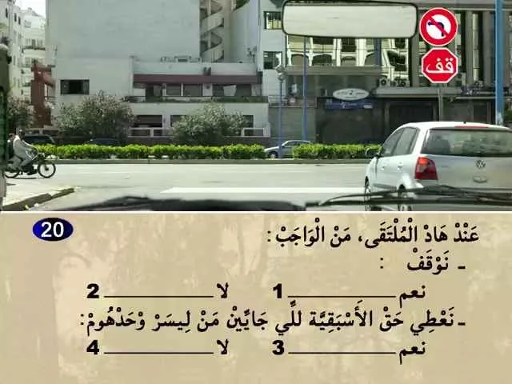
بيّن الجواب
الجواب الصحيح: 1 و 3
كاينة علامة قف، إذن ضروري نوقف فملتقى الطرق ونعطي حق الأسبقية للطوموبيلات اللي جاية من الجهة اليسرى فقط حيث ما كايناش طوموبيلات جاية من اليمين.
السؤال 21
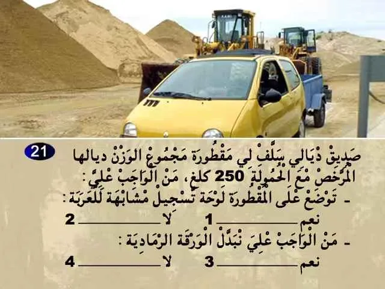
بيّن الجواب
الجواب الصحيح: 1 و 4
ملي كنجر مقطورة من الخلف خاصني نركب لوح تسجيل فالمقطورة بنفس أرقام الطوموبيل، وما خاصنيش نبدل الورقة الرمادية حيث الحمولة لا تتعدى 750 كجم.
السؤال 22
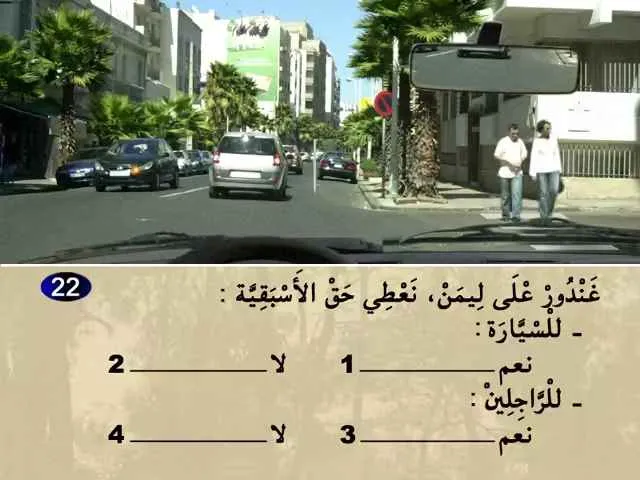
بيّن الجواب
الجواب الصحيح: 2 و 3
الأسبقية خاصني نعطيها للطوموبيلات اللي جاية من اليمين، ما نعطيش الأسبقية للطوموبيل السوداء حيث هي فليسار، ولكن الراجلين ضروري نعطيهم الأسبقية.
السؤال 23
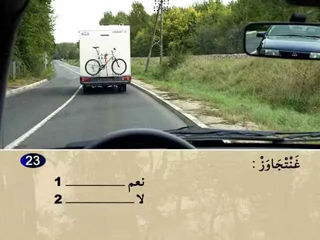
بيّن الجواب
الجواب الصحيح: 2
الخط المتصل كيمنعني من التجاوز.
السؤال 24
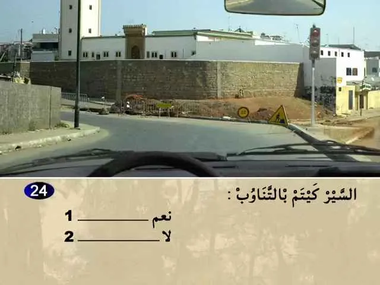
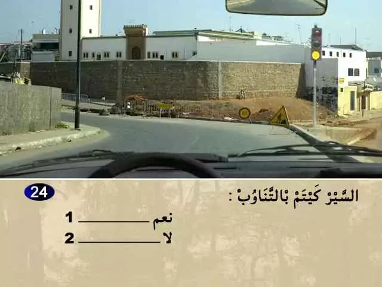
بيّن الجواب
الجواب الصحيح: 2
كاينة أشغال كما كتوضح العلامة الطُرقيّة المؤقتة، وعلامة تحديد السرعة في 20 كلم ف الساعة، وكاينة إشارة ضوئية برتقالية كترفرف، ما كايناش إشارة كتقول أن السير بالتناوب.
السؤال 25
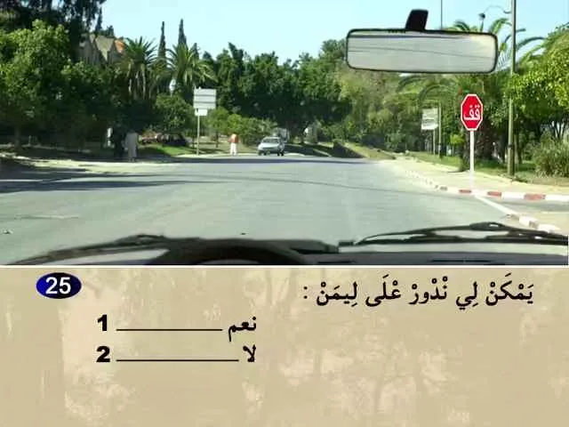
بيّن الجواب
الجواب الصحيح: 2
فهاد الحالة ما يمكنش ندور لليمين حيث كاين خط مرسوم على الأرض كيعني أن الطريق ذات اتجاه واحد يعني غير كيجيب و ماكايديش.
السؤال 26
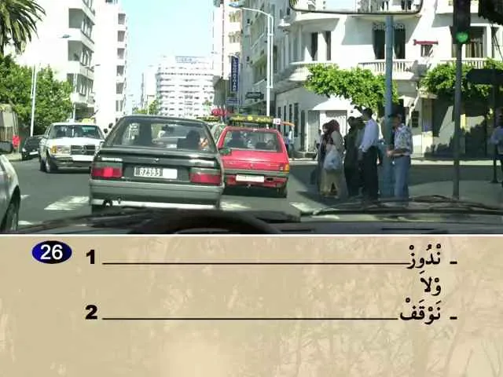
بيّن الجواب
الجواب الصحيح: 1
الإشارة الضوئية خضراء كتسمح لي بالمرور، الراجلين واقفين والطوموبيلات اللي قدامي مشات، إذن ننتبه ونمشي حيث الإشارة كتسمح.
السؤال 27
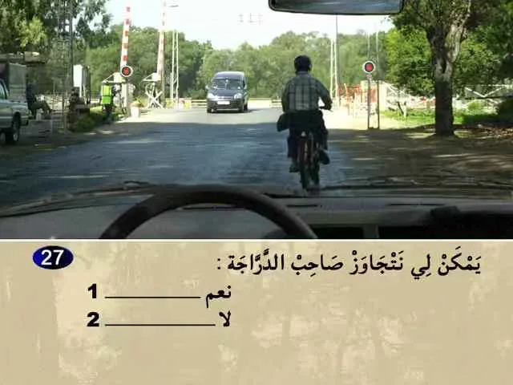
بيّن الجواب
الجواب الصحيح: 2
ما يمكنش نتجاوز صاحب الدراجة، أولا حيث كاينة طوموبيل جاية من الاتجاه المعاكس، وثانيا الضوء الأحمر عند السكة كيجبّرني نوقف.
السؤال 28
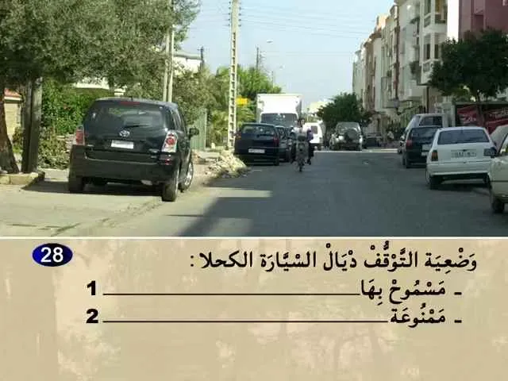
بيّن الجواب
الجواب الصحيح: 2
الطوموبيل السوداء واقفة بشكل غير قانوني لأن الطريق ذات اتجاهين والطوموبيلات جاية من الاتجاه المعاكس، يعني خاصها توقف فالجهة اليمنى ماشي فاليسار.
السؤال 29
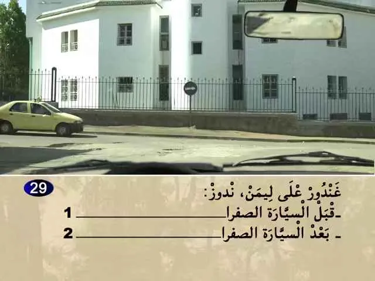
بيّن الجواب
الجواب الصحيح: 1
غادي ندور لليمين، فالملتقى الأسبقية للطوموبيلات الجاية من اليمين، وأنا فاليمن ديال الطوموبيل الصفراء، إذن خاصها تعطيني الأسبقية وندوز قبل منها.
السؤال 30
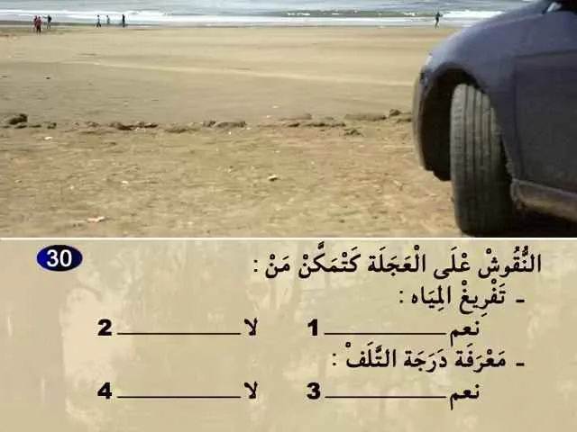
بيّن الجواب
الجواب الصحيح: 1 و 3
النقوش الموجودة فالعجلة كتساعد فالتفريغ ديال الما خصوصا وقت الشتا، ومن خلال النقوش نعرف حالة العجلة واش مزيانة ولا لا ودرجة التلف ديالها.
السؤال 31
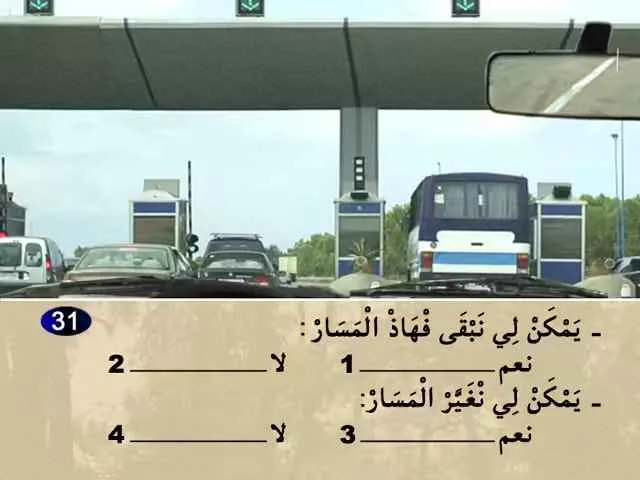
بيّن الجواب
الجواب الصحيح: 1 و 4
فمحطة الأداء فالطريق السيار ما يمكنش نبدل المسار للجهة الأخرى للدفع، خاصني نبقى فالمسار اللي كنت فيه وننتظر حتى يوصل دوري.
السؤال 32
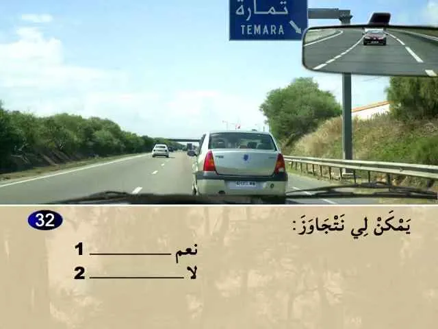
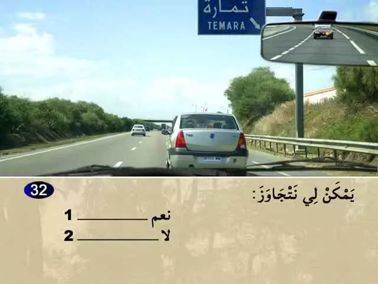
بيّن الجواب
الجواب الصحيح: 1
الخط المتقطع كيسمح ليا بالتجاوز، الطوموبيل اللي ورايا شغّلت ضوء تغيير الاتجاه فاليمين، هذا يعني أنها ما بغاتش تتجاوزني ولكن بغات تمشي للمسلك اليمني باش تمشي لمدينة تمارة، إذن يمكنني نتجاوز.
السؤال 33
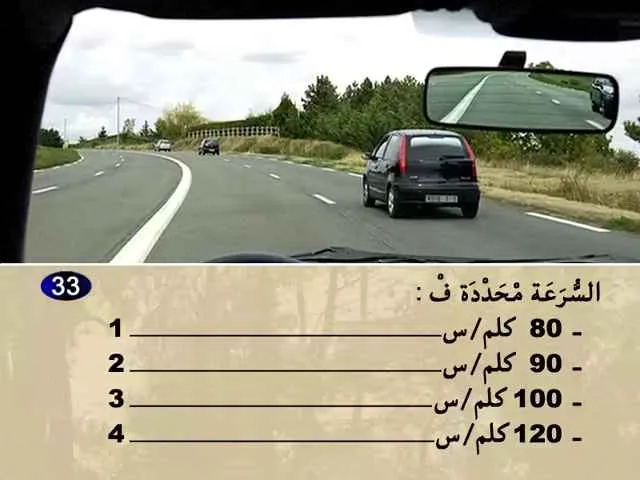
بيّن الجواب
الجواب الصحيح: 3
فطريق وطنية، السرعة محددة في 100 كلم ف الساعة. فالطريق السيار السرعة محددة في 120 كلم ف الساعة.
السؤال 34
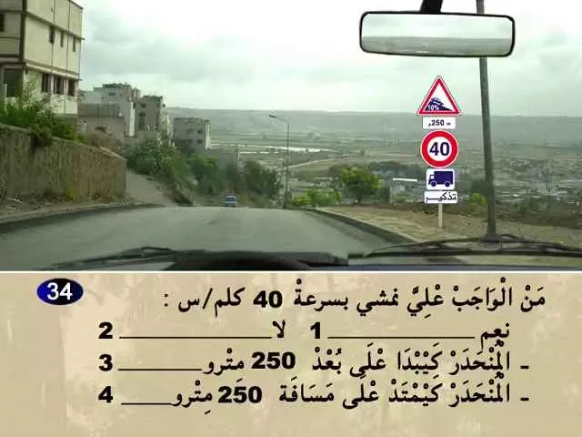
بيّن الجواب
الجواب الصحيح: 2 و 3
الإشارة الطُرقيّة كتحدد السرعة في 40 كلم ف الساعة للشاحنات كما كتشير العلامة التكميلية، إذن ما خاصنيش نسوق بسرعة 40 كلم ف الساعة. المنحدر كيبدا بعد 250 متر.
السؤال 35
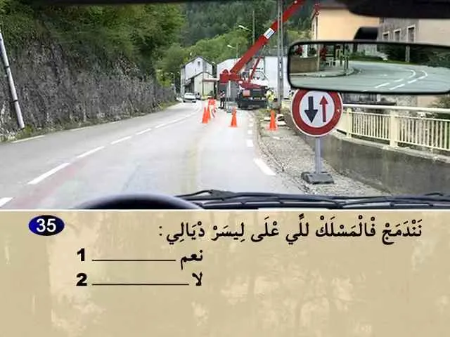
بيّن الجواب
الجواب الصحيح: 2
الإشارة الطُرقيّة كتقول أن الأسبقية للطوموبيلات الجاية من الاتجاه المعاكس (السهم الأسود)، كاينة طوموبيل جاية خاصني ننتظر حتى تمر باش نقدر ندمج فالمسلك اليساري.
السؤال 36
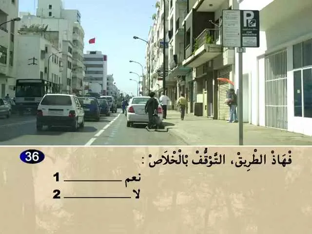
بيّن الجواب
الجواب الصحيح: 1
العلامة اللي فيها حرف P كتقول أن التوقف ماشي مجاني.
السؤال 37
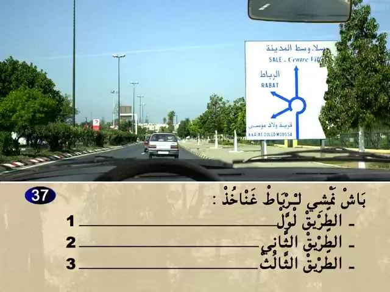
بيّن الجواب
الجواب الصحيح: 2
باش نمشي لمدينة الرباط خاصني نسلك الطريق الثانية كما كتوضح العلامة، الطريق الأول هو طريق سلا، والطريق الثاني هو لمدينة الرباط.
السؤال 38
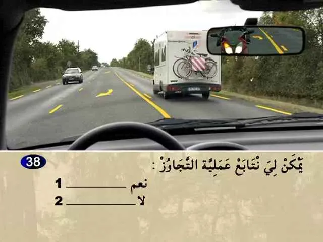
بيّن الجواب
الجواب الصحيح: 1
يمكنني نكمل التجاوز، أسهم الانحياز تخص الطوموبيلات الجاية من الاتجاه المعاكس.
السؤال 39
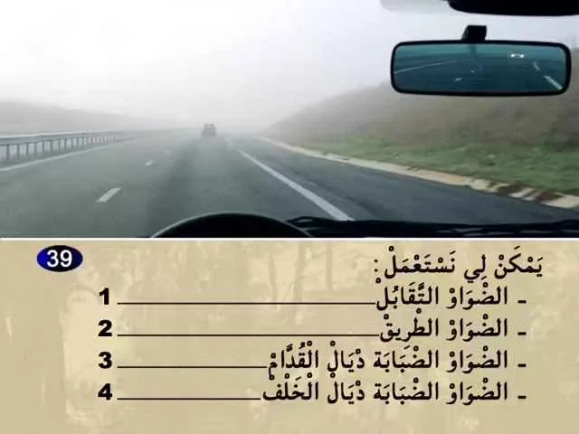
بيّن الجواب
الجواب الصحيح: 1 و 3 و 4
فالضباب نستعمل أضواء التقابل وأضواء الضباب الأمامية والخلفية.
السؤال 40
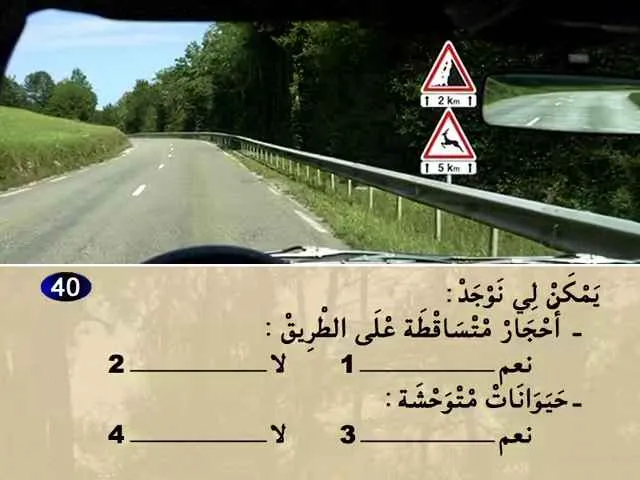
بيّن الجواب
الجواب الصحيح: 1 و 3
العلامات الطُرقيّة كتقول أن على طول 2 كيلومتر غادي نلقى أحجار متساقطة، وعلى طول 5 كيلومتر غادي نلقى حيوانات كما كتقول الإشارة الثانية.